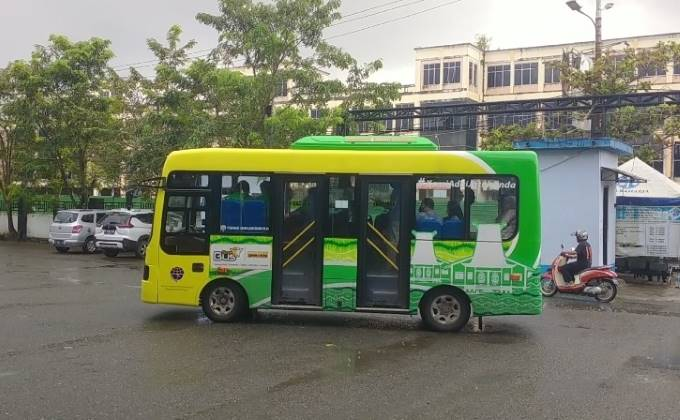

Halimah terkejut membaca sebuah unggahan di Instagram. Diumumkan, mulai 26 September mendatang, penumpang Trans Banjarbakula wajib menunjukkan kartu atau aplikasi Teman Bus kepada pramudi.
Jika tidak bisa menunjukkan, maka dilarang naik. “Sampai sekarang belum dapat kartunya,” ceritanya (19/9). Halimah sering mengantar ayahnya ke halte untuk berangkat kerja ke kawasan Gambut, Kabupaten Banjar. Dia maklum, lambat laun, layanan transportasi massal dengan konsep buy the service (BTS) ini bakal berbayar. Tidak selamanya gratis. Tapi ia berharap ada kemudahan bagi penumpang, terutama bagi masyarakat awam. “Takut juga kalau ayah saya tidak mengerti,” tambahnya.
Senada dengan Hamidan. Pekerja swasta ini mengaku belum memiliki e-Money. “Belum punya. Katanya sih bisa diurus lewat bank,” ujarnya.
Sebenarnya, cukup mudah untuk memperoleh e-Money. Beberapa banyak sudah menyediakan duit elektronik tersebut. Seperti e-Money Bank Mandiri, Indomaret Mandiri, Flazz BCA, TapCash BNI, dan BRIZZI dari BRI.
Namun, kabar itu justru dibantah Kepala Balai Pengelola Transportasi Darat (BPTD) Wilayah XV Kalimantan Selatan, Zulmardi.
Ditegaskannya, Kementerian Perhubungan belum memberlakukan aplikasi Teman Bus atau e-Money. Terlebih, sampai saat ini belum ada penetapan tarif. “Tidak ada itu,” tepisnya.
Lalu, apa maksud postingan di medsos itu? Zulmardi menjawab, sekadar sosialisasi saja. Agar penumpang tidak kaget saat bus Trans Banjarbakula tak lagi gratis.
“Jadi tidak ada penolakan penumpang untuk naik jika tak punya kartu atau aplikasi,” tegasnya.
Dijelaskannya, infrastruktur penunjang e-Money pun masih memerlukan perbaikan. “Ada beberapa yang bermasalah. Jadi kalau mau diberlakukan dalam waktu dekat, belum bisa juga,” imbuhnya.
Saat ini bus Trans Banjarbakula sudah menyasar empat dari 10 koridor yang direncanakan.

Blog Image Desc
"Anda tidak dapat sampai ke sana dengan bus, hanya dengan kerja keras dan risiko dan dengan tidak begitu mengetahui apa yang Anda lakukan.
Apa yang akan Anda temukan akan menjadi luar biasa.
Apa yang akan Anda temukan adalah diri Anda sendiri."
Koridor 1 melayani wilayah Banjarbaru. Titik keberangkatannya di Terminal Gambut Barakat dan Tugu Simpang Empat.
Sementara koridor 2 melayani wilayah Banjarmasin dengan titik keberangkatan di Terminal Gambut Barakat dan Taman Siring Nol Kilometer.
Sedangkan koridor 3 melayani wilayah Barito Kuala dengan titik keberangkatan Terminal Pal Enam dan Universitas Muhammadiyah.
Sedangkan koridor 4 melayani Tanah Laut, dari Terminal Gambut Barakat sampai kantor Kecamatan Bati Bati.